רוב הנחשים שתפגשו בישראל אינם ארסיים ואינם מהווים כל סכנה. למעשה רבים מהם מועילים מאוד: הם ניזונים ממכרסמים וחרקים, וחלקם — כמו זעמן המטבעות — טורף אפילו נחשים ארסיים. ריכזתי כאן כל מין על פרטיו מתוך השטח: איך הוא נראה, איך הוא חי, מה הוא אוכל והיכן למצוא אותו. ואף שאינם מסוכנים, הכלל נשאר אחד: אל תיגעו בנחש בר ואל תנסו ללכוד אותו — תנו לו להמשיך בדרכו בבטחה.
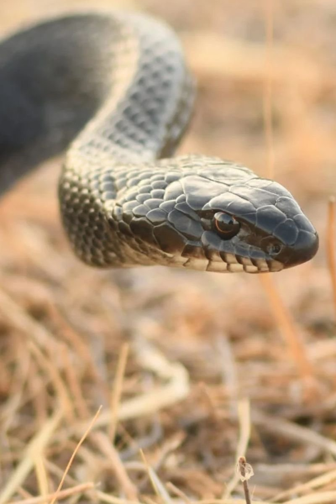
זעמן שחור
Dolichophis jugularisנחש גדול ומבריק שמראהו משתנה במהלך חייו: כשהוא בוקע צבעו חום בהיר עם כתמים, ועם ההתבגרות גופו הופך לשחור מבריק ואחיד בעוד הלסת התחתונה נשארת בהירה. מהנחשים הנפוצים בישראל, פעיל בעיקר ביום ורק לעיתים נדירות נראה בלילה. עיניו גדולות והאישונים עגולים.
- אורךעד 250 ס״מ
- תזונהמכרסמים, ציפורים, לטאות ונחשים
- תפוצהמקו באר שבע ועד גבול לבנון
האם הוא מסוכן? לא, זהו מין שאינו ארסי ואינו מסוכן לאדם. עם זאת מומלץ לא לגעת בו או לנסות ללכוד אותו, ולאפשר לו להמשיך את חייו בבית גידולו הטבעי.
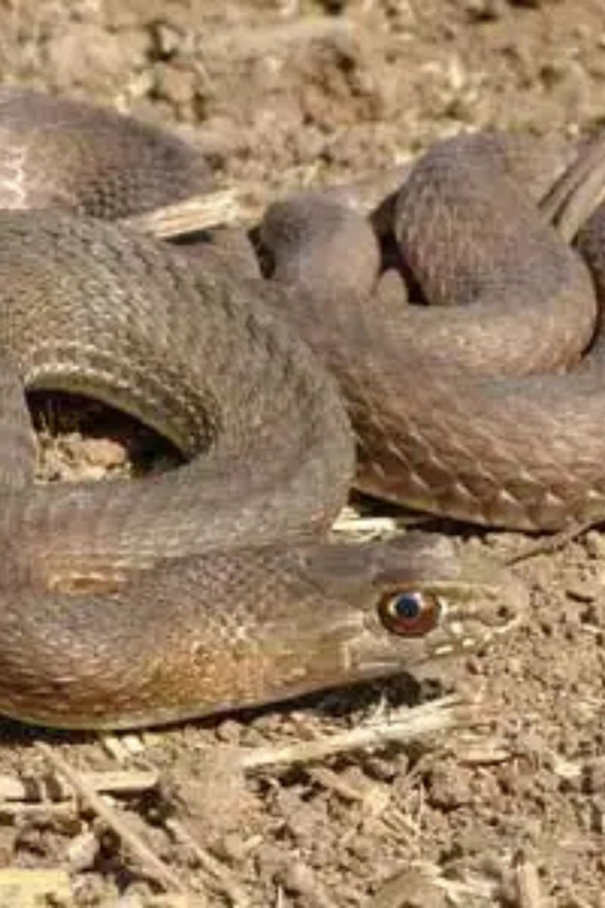
תלום קשקשים מצוי
Malpolon insignitusאחד הנחשים הגדולים בישראל. סימן ההיכר שלו הוא קשקשים בולטים מעל העיניים היוצרים מראה של 'גבות', ותלם במרכז כל קשקש. מהיר ומטפס היטב. שימו לב: זהו נחש תת-ארסי, ואינו מסוכן במיוחד לאדם, אך הכשתו עלולה לגרום לתסמינים מקומיים כואבים.
- אורךעד 210 ס״מ
- תזונהציפורים, לטאות, נחשים ומכרסמים
- תפוצהאזורים ים-תיכוניים מבאר שבע צפונה
האם הוא מסוכן? לא, זהו מין שאינו ארסי ואינו מסוכן לאדם. עם זאת מומלץ לא לגעת בו או לנסות ללכוד אותו, ולאפשר לו להמשיך את חייו בבית גידולו הטבעי.
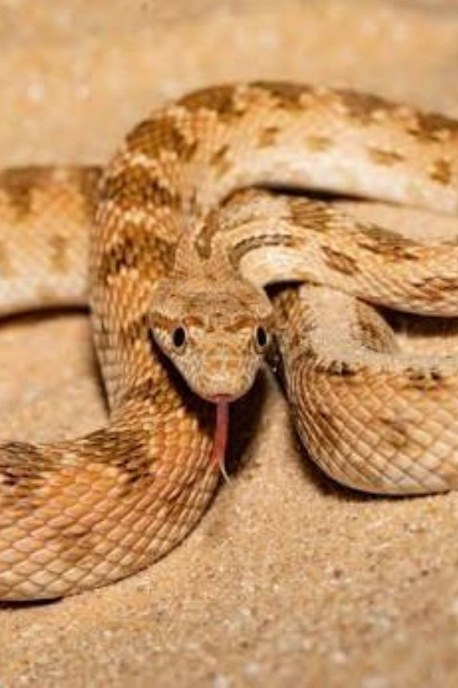
מטבעון
Spalerosophis diademaאחד הנחשים המדבריים הארוכים בישראל. צבע גופו חום, צהבהב או כתום, ועל גבו כתמים חומים דמויי מטבעות או צלבים. הראש רחב מהצוואר, ובין העיניים מופיע לרוב פס חום. פעיל בקיץ בשעות אחר הצוהריים המאוחרות ובלילה, מטפס היטב אך עיקר פעילותו על הקרקע.
- אורךעד 150 ס״מ
- תזונהלטאות, מכרסמים וציפורים
- תפוצההנגב, הערבה, כיכר ים המלח וחולות מישור החוף
האם הוא מסוכן? לא, זהו מין שאינו ארסי ואינו מסוכן לאדם. עם זאת מומלץ לא לגעת בו או לנסות ללכוד אותו, ולאפשר לו להמשיך את חייו בבית גידולו הטבעי.
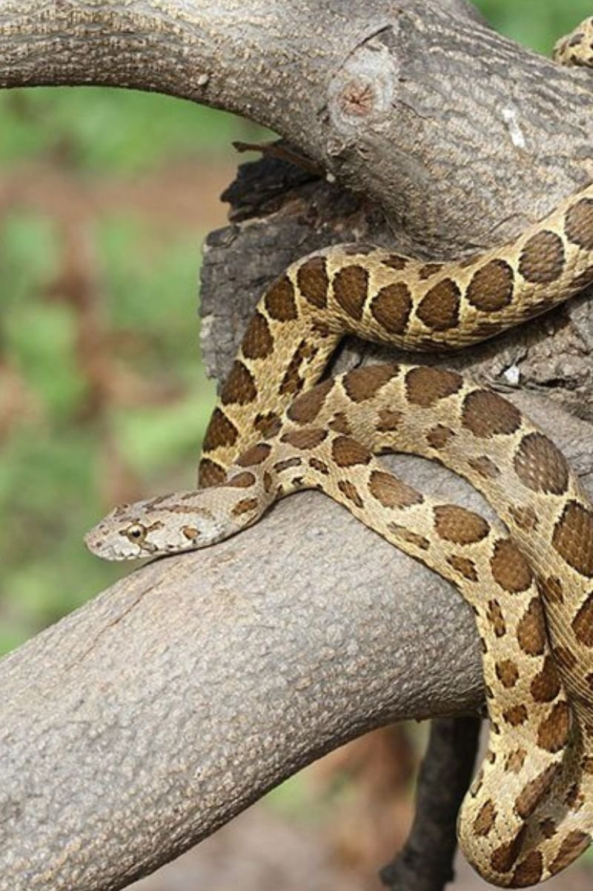
זעמן מטבעות
Hemorrhois nummiferנחש בינוני בגודלו וצבעו אפור מבריק, ולאורך מרכז גבו שורת כתמים כהים עגולים או דמויי צלב. בעל יכולת מרשימה לטפס על צמחייה וקירות אבן, ולעיתים נכנס לבתים גם בקומות גבוהות. פעילותו מתחילה עם רדת החשיכה ונמשכת בלילה, וניתן לראותו פעיל גם בחורף.
- אורךעד 125 ס״מ
- תזונהציפורים, מכרסמים, עטלפים, לטאות ואף נחשים ארסיים
- תפוצהמצפון הנגב ועד החרמון
האם הוא מסוכן? לא, זהו מין שאינו ארסי ואינו מסוכן לאדם. עם זאת מומלץ לא לגעת בו או לנסות ללכוד אותו, ולאפשר לו להמשיך את חייו בבית גידולו הטבעי.
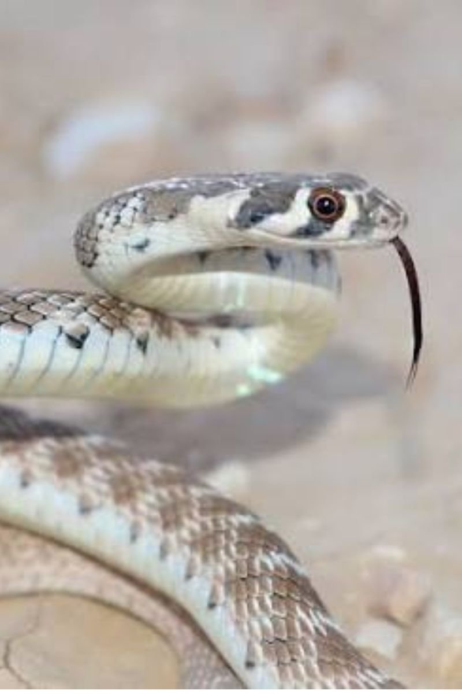
זעמן אוכפים
Platyceps rogersiזעמן בינוני, דק ועדין, בעל גוון גוף אפור. מהצוואר לאורך עמוד השדרה מופיעים כתמים אפורים התחומים בקווים רוחביים לבנים, הדוהים מאמצע הגוף. מתחת לכל עין יש שני כתמים לבנים. פעיל בעיקר בשעות הבוקר ואחר הצהריים, ומוצא מחסה מתחת לעצמים או במחילות מכרסמים.
- אורךעד 100 ס״מ
- תזונהלטאות ופרוקי רגליים, ולעיתים מכרסמים
- תפוצהמיריחו דרומה: בקעת הירדן, ים המלח, הערבה והנגב
האם הוא מסוכן? לא, זהו מין שאינו ארסי ואינו מסוכן לאדם. עם זאת מומלץ לא לגעת בו או לנסות ללכוד אותו, ולאפשר לו להמשיך את חייו בבית גידולו הטבעי.
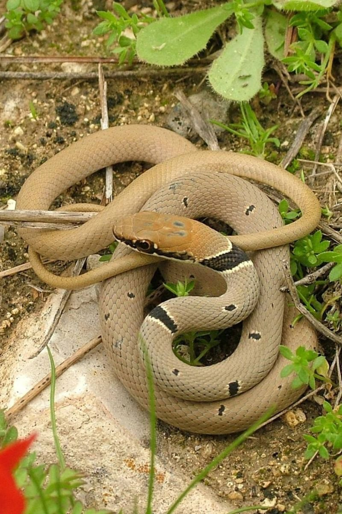
זעמן זיתני
Platyceps collarisנחש דק ועדין, צבע גופו נע בין ירוק זיתי, חום ואפור, וראשו כתום-חלוד. מזוהה בכתם שחור אחד לפחות מאחורי הראש הדומה לקולר ותחום בלבן. מהנחשים הנפוצים בבתי גידול ים-תיכוניים, פעיל ביום ומטפס היטב, ומהיר ברדיפה אחר טרפו.
- אורךעד 110 ס״מ
- תזונהבעיקר לטאות, והצעירים גם פרוקי רגליים
- תפוצהבתי גידול ים-תיכוניים מצפון הנגב ועד החרמון
האם הוא מסוכן? לא, זהו מין שאינו ארסי ואינו מסוכן לאדם. עם זאת מומלץ לא לגעת בו או לנסות ללכוד אותו, ולאפשר לו להמשיך את חייו בבית גידולו הטבעי.
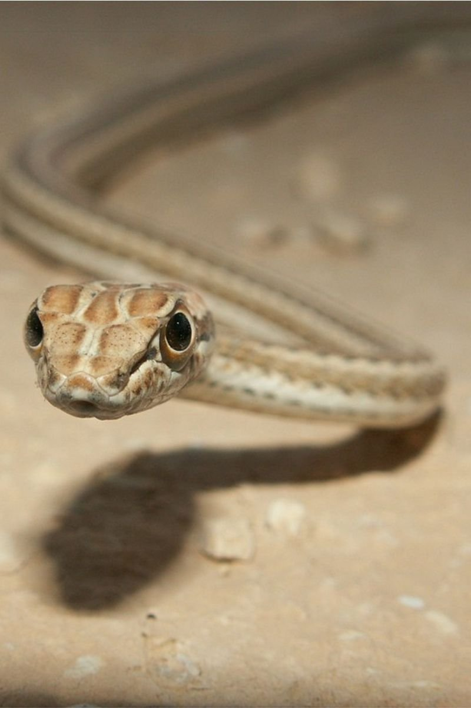
ארבע קו מובהק
Psammophis schokariנחש דק ובעל גוף חזק, ומראהו משתנה בין צפון הארץ לדרומה: בצפון ארבעה פסים כהים לאורך הגוף, ובאזורים מדבריים הפסים דוהים ולעיתים נעלמים כמעט לגמרי. מהיר מאוד ופעיל ביום, ומאתר את טרפו בעזרת חוש ראייה מפותח. שימו לב: תת-ארסי אך אינו מסוכן לאדם.
- אורךעד 120 ס״מ
- תזונהלטאות, נחשים, ציפורים ומכרסמים
- תפוצהבכל רחבי ישראל, מאילת ועד החרמון
האם הוא מסוכן? לא, זהו מין שאינו ארסי ואינו מסוכן לאדם. עם זאת מומלץ לא לגעת בו או לנסות ללכוד אותו, ולאפשר לו להמשיך את חייו בבית גידולו הטבעי.
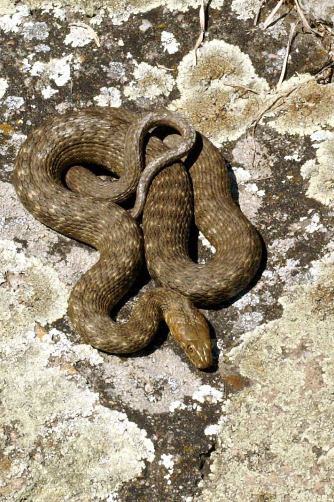
נחש מים
Natrix tessellataצבע גופו נע בין ירוק, חום ושחור, ומאופיין בכתמים שחורים רבים על גבו המסודרים כמו לוח שחמט. בטנו צהובה או כתומה עם כתמים שחורים לא סדירים. פעיל ביום ובלילה, חי בקרבת בריכות טבעיות ומלאכותיות, ולעיתים נראה גם הרחק ממקורות מים.
- אורךעד 100 ס״מ
- תזונהדו-חיים ודגים, ולעיתים זוחלים, מכרסמים וציפורים
- תפוצהבתי גידול ים-תיכוניים בקרבת מקווי מים
האם הוא מסוכן? לא, זהו מין שאינו ארסי ואינו מסוכן לאדם. עם זאת מומלץ לא לגעת בו או לנסות ללכוד אותו, ולאפשר לו להמשיך את חייו בבית גידולו הטבעי.
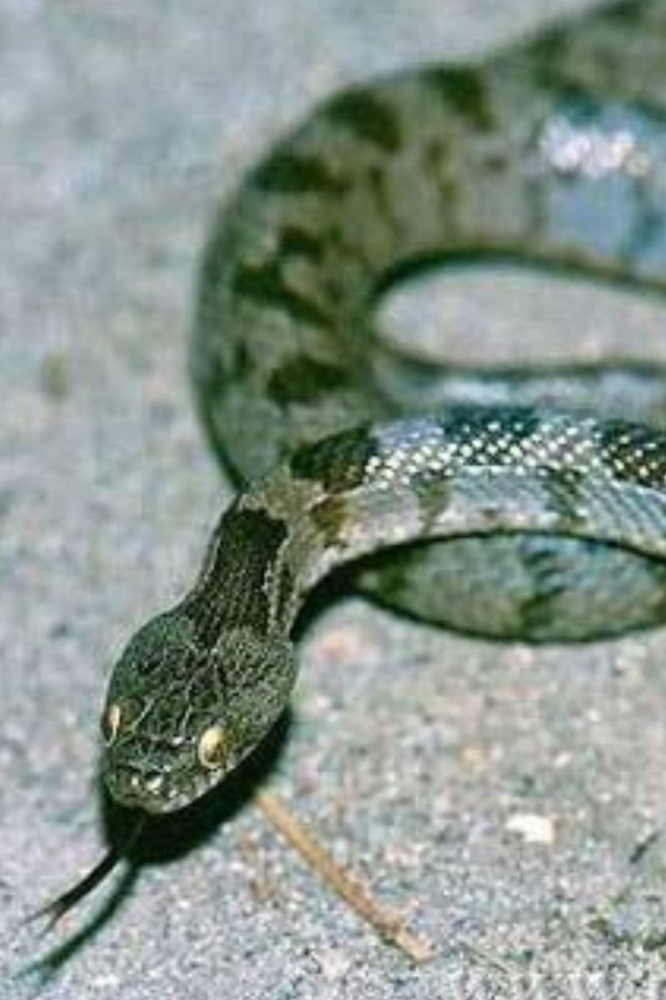
עין חתול חברבר
Telescopus fallaxגופו חום או אפור ועל גבו כתמים כהים דמויי מטבעות. ראשו רחב מהצוואר, והאישונים שלו מאונכים – ממש כמו של חתול, ומכאן שמו. פעיל לילה, מטפס היטב אך מבלה את רוב זמנו על הקרקע ונע באיטיות. שימו לב: תת-ארסי אך אינו מסוכן לאדם.
- אורךעד 80 ס״מ
- תזונהלטאות ובמיוחד שממיות, ונחשים קטנים
- תפוצהמצפון הנגב ועד גבול לבנון
האם הוא מסוכן? לא, זהו מין שאינו ארסי ואינו מסוכן לאדם. עם זאת מומלץ לא לגעת בו או לנסות ללכוד אותו, ולאפשר לו להמשיך את חייו בבית גידולו הטבעי.
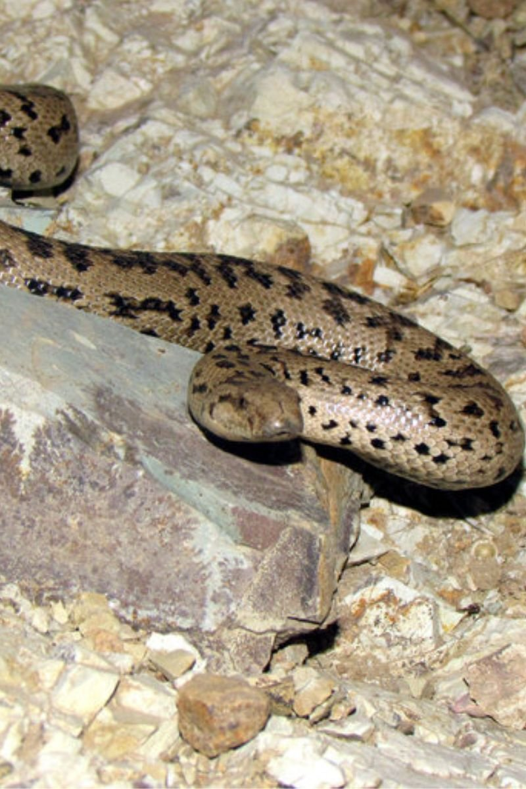
חנק
Eryx jaculusנחש עבה ובעל גוף מוצק, עם זנב קצר שקצהו דמוי גדם. הלסת העליונה בולטת מעל התחתונה ומסייעת לו להתחפר, קשקשיו חלקים ועיניו קטנות עם אישונים מאונכים. באזורים חוליים הוא מתחפר באדמה ורק עיניו וחרטומו בולטים החוצה, וכך ממתין לטרפו במארב. הורג את טרפו בכריכת גופו סביבו וחניקתו.
- אורךעד 80 ס״מ
- תזונהמכרסמים ולטאות
- תפוצהמצפון הנגב ועד החרמון
האם הוא מסוכן? לא, זהו מין שאינו ארסי ואינו מסוכן לאדם. עם זאת מומלץ לא לגעת בו או לנסות ללכוד אותו, ולאפשר לו להמשיך את חייו בבית גידולו הטבעי.
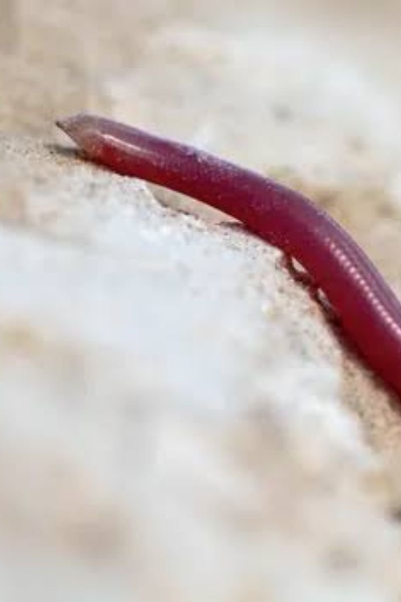
נחשיל מצוי
Xerotyphlops vermicularisנחש דק ועדין מאוד, בעל גוף מבריק שצבעו יכול להיות ורוד, חום או שחור, ומראהו הכללי מזכיר תולעת אדמה. עיניו קטנות מאוד. מבלה חלק ניכר מחייו תחת מחסות וניתן למצוא אותו מתחת לגזעי עצים ואבנים. פעילותו קרקעית ובעיקר לילית, ולעיתים נצפה חוצה כבישים או חודר לגינות.
- אורךעד 40 ס״מ
- תזונהטרמיטים ונמלים בשלבי התפתחות שונים
- תפוצהבכל רחבי ישראל
האם הוא מסוכן? לא, זהו מין שאינו ארסי ואינו מסוכן לאדם. עם זאת מומלץ לא לגעת בו או לנסות ללכוד אותו, ולאפשר לו להמשיך את חייו בבית גידולו הטבעי.
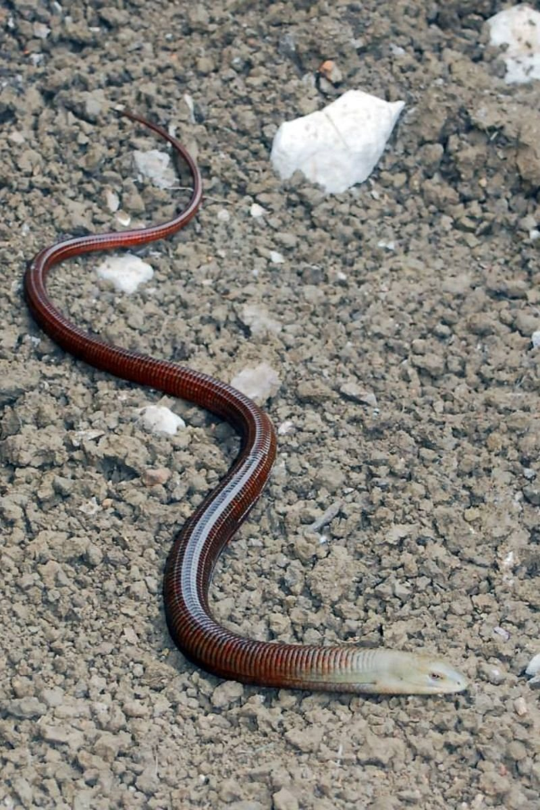
קמטן
Pseudopus apodusזוחל ארוך וחסר רגליים המבולבל תמיד עם נחש, אך הוא למעשה לטאה אמיתית (ניתן להבחין בעפעפיה הנעים ופתח אוזנה הנראה). לא ארסית כלל ושלווה באופייה, חיה בין העשבים והשדות.
- אורךעד 140 ס״מ
- תזונהחרקים, חלזונות ומכרסמים קטנים
- תפוצהרוב חלקי הארץ
האם הוא מסוכן? לא, זהו מין שאינו ארסי ואינו מסוכן לאדם. עם זאת מומלץ לא לגעת בו או לנסות ללכוד אותו, ולאפשר לו להמשיך את חייו בבית גידולו הטבעי.
הנחשים הלא ארסיים הם בעל ברית שקט של האדם: הם מווסתים אוכלוסיות מכרסמים וחרקים ושומרים על איזון הטבע. ההיכרות איתם חוסכת פחד מיותר, ומגינה גם עליהם מהריגה שלא לצורך. ידע וכיבוד מרחב המחיה של חיות הבר הם הדרך הטובה ביותר לשמור על האדם ועל הטבע כאחד.
הערה חשובה: חלק מהמינים המוזכרים כאן הם 'תת-ארסיים' — כלומר בעלי ניבים אחוריים מעט רעילים שאינם מהווים סכנה אמיתית לאדם, אך הכשתם עלולה לגרום לתסמינים מקומיים כואבים. בכל מקרה: לא לגעת ולא ללכוד.